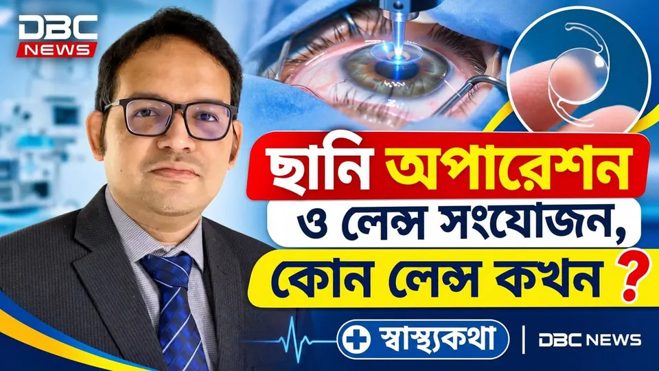

20:26Dr. Md. Afzal Mahfuzullah
MBBS, MCPS, FCPS (Ophthalmology)
Fellow — Retina & Vitreous (IEH)
Vitreo-Retina Specialist & Phaco Surgeon
Associate Professor (Vitreo-Retina), Bangladesh Medical University (BMU)
Consultant Ophthalmologist, Vision Eye Hospital, Green Road, Dhaka
Joint Secretary General, Bangladesh Vitreo-Retina Society (BVRS)
BMDC Reg: A-48558
- VISION EYE HOSPITAL, 299, Green Road, Dhaka
- 09610244123 · 01988815714 | Call centre 8:00 AM – 10:00 PM
- drafzalmahfuzullah@gmail.com
- www.visioneyebd.org
Eye Care Services
Quick Links
Consultation Schedule
VISION EYE HOSPITAL — 299, Green Road, Dhaka
Sat 5:30–9:00 PM · Sun 5:30–9:00 PM · Mon 5:30–9:00 PM
Tue 5:30–9:00 PM · Wed 6:30–9:00 PM · Thu 5:30–8:00 PM | Friday Closed
Call for Appointment© Dr. Md. Afzal Mahfuzullah — Vitreo-Retina Specialist & Phaco Surgeon | BMDC Reg: A-48558, All Rights Reserved.
Designed By SHAHIN ALOM